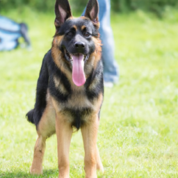

Once upon a time in a small village, there lived a kindhearted dog named Max...
Max was rescued from a busy street by a kind old man. The old man loved Max and took him in, feeding him and training him. Max's love for the old man grew every day, Max would follow him everywhere he went and would cry when the man left. One day the old man got sick, Max knew something was wrong and refused to leave his side. Max refused to eat and drink and would lay beside the old man's bed. Max's love and loyalty went beyond what anyone could have imagined, Max never left his side until the old man passed away.
After the old man's passing Max was has taken in by the old man's son, who saw the love and loyalty Max had for his father. Max lived happily with the old man's son and his family until his old age.
Max's story is one of love, loyalty, and compassion. Max will always be remembered as a brave and loving dog.